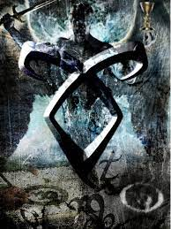

Raziel
Details
|  | |
| Spielzeit | Nicht gespielt |
| Letzte Aktivität | Nie |
| Hinzugefügt | 04.12.2021 15:22:04 |
| Modifiziert | 12.12.2022 1:17:19 |
| Fertigstellungsstatus | Not Played |
| Bibliothek | Playnite |
| Quelle | |
| Plattform | Android |
| Veröffentlichungsdatum | 2015 |
| Community Bewertungen | |
| Kritiker Punkte | |
| Benutzerwertung | |
| Genre | Casual |
| Entwickler | Carlos Davilla Cats From The Underground |
| Verleger | Cats From The Underground |
| Eigenschaft | Achievements Partial Controller Support Single Player |
| Links | Communityhub Diskussionen Guides Neuigkeiten Shopseite PCGamingWiki Errungenschaften |
| Tag | 2D Adventure Atmospheric Controller Conversation Drama Exploration Free to Play Indie Life Sim Multiple Endings Nonlinear Open World Pixel Graphics Psychological RPGMaker Single Player Story Rich Top-Down Walking Simulator |
Beschreibung
"They say Hell lies in other people, but I don't think it's worse than living with your own past. Those people barely grasp what Hell can really be."
You are Avoir Cafard, a miserable, dull man that lives in a dirty and deplorable apartment, in a forsaken town with sad people and monotonous situations.
Avoir works in a local church as a spiritual counselor for people who have problems with life, either because of friendships, love, work, or family.
During five days, he will give counseling to five different people with different situations that are disturbing them.
Taking them for a walk.
Talking to them for a while.
Making them see that things are not as bad as they imagine.
Maybe that will help them, somehow.
While at it, Avoir is also trying to solve his own problems. Problems about his own past.
He wishes to forget it at all costs.
Sadly, memories from an eternity seem impossible to forget.

About
Raziel (Rah-ziih-ell) is an adventure-esque, atmospheric and utterly poetic game where you wander about solving small tasks and talking to people. It aims to be a character study of five distinct people and their stream of consciousness, while also being a tale about introspection, alienation, nostalgia, loneliness, and the human condition.
The game is set within five days of Avoir's life. In each of them, you meet a different person which you must help to ease their struggles about life while discovering new things about Avoir himself.
While not taking care of them, you are free to wander about in the city talking to its inhabitants and maybe even helping them along the way.
It revolves in five chapters with a prologue, two interludes, and an epilogue.
It was made with RPG Maker 2000, with a custom message and climate system made with Destiny Patch V2.

Features
- 3+ hours of gameplay;
- Reactive Storytelling;
- Original Soundtrack;
- Charismatic characters;
- Pixel Art cutscenes;
- Semi-open world;
- Customizable settings.